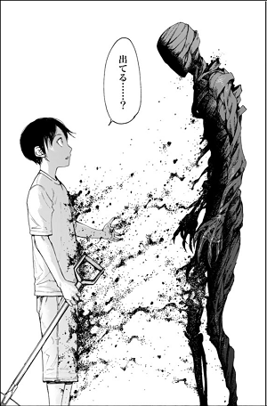
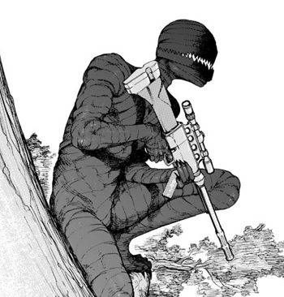
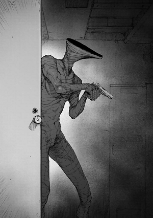
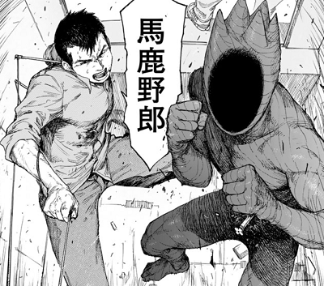
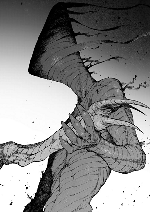
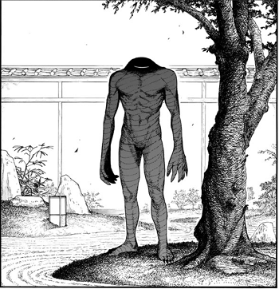
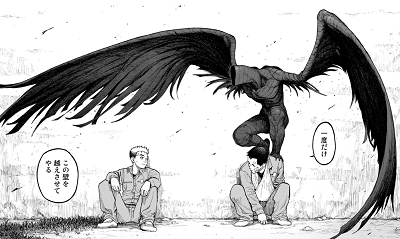
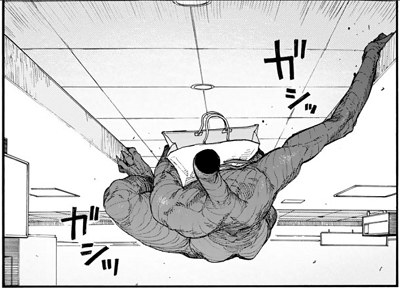

IBMとは
亜人が生成する未知の物質。
科学的には屈折率がおよそ1.000292の完全に透明な物質で構成されており、基本的には亜人同士にしかその姿を見ることはできない。だが例外として亜人に強い敵意を向けられた人間は姿を視認できる。
霊的な存在ではなく物質であるため、足跡は残り、幽霊が手に持っているものは宙に浮いて見え、小麦粉などの粉をかけると誰からでも存在を認識できる。
また、亜人だからといって全員がIBMを出せるわけではなく、IBMを操れる者は「別種」「アドバンス」と呼ばれる。何らかの素質や覚醒が引き金となって突然に使えるようになる特殊能力であり、殺され続ける、誰かを恨み続けるなど、強いストレスがかかることで出現する事が多い。
-
永井圭
- 
形状はプレーン。
圭の命令を無視して勝手に動き、よく他者を攻撃する。
状況に関係なく、圭が以前言った言葉を反復する。
-
田中
- 
鋭利な牙と爪が特徴的。
素早い動きで主に詰めを使っての攻撃が多い。
スムーズに喋らせることができ、ライフルも撃てる。
-
佐藤
- 
頭部が特徴的で、長い舌をもちトカゲか何か爬虫類を思わせる形状。
銃やナイフを扱うことができ、肉弾戦も得意。
口を大きく開いて、相手を食い殺すこともできる。
-
秋山礼二
- 
4巻15話のみ登場する。
面長の顔で、頭部に角のような突起があるのが特徴。
拳を構えた姿から、肉弾戦を主とする戦闘スタイルかもしれない。
-
下村泉
- 
頭部が細く、横からだと三角形に見える形状。
2体を同時に出すこともできる。
泉が最初にIBMを出した時期の形状はプレーンだった。
-
高橋
- 
首から先の頭部がなく、首元に口のような切れ込みがある形状。
手が大きく、拳を使った打撃による戦闘スタイルをとる。
戦闘が終わった後、高橋と拳を合わせたり互いに肩を組んだりする。
-
琴吹武
- 
初登場は3巻。
太い首から先の頭部がなく、両腕から伸びた大きな翼がある独特な形状。
翼があるため、上空を飛ぶことが可能。
-
奥山
- 
指と首が長く、代わりに頭部がない独特な形状をしている。
日にIBMを使える回数制限があるなかで、奥山は一回きりしか使えないよう。
喋る言葉もたどたどしく、スムーズに会話することはできない。